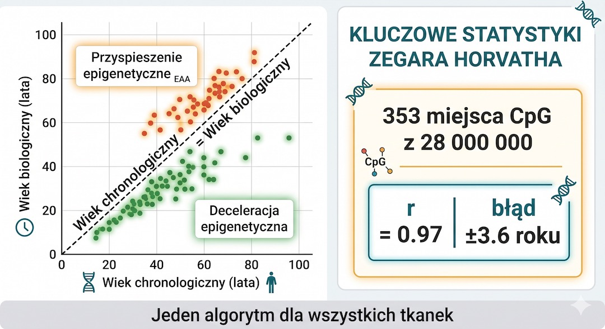
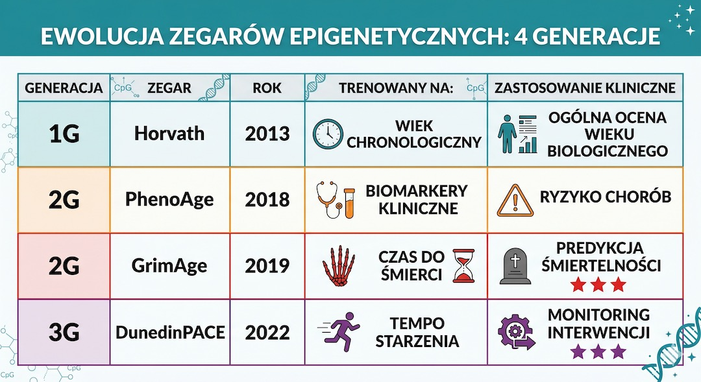
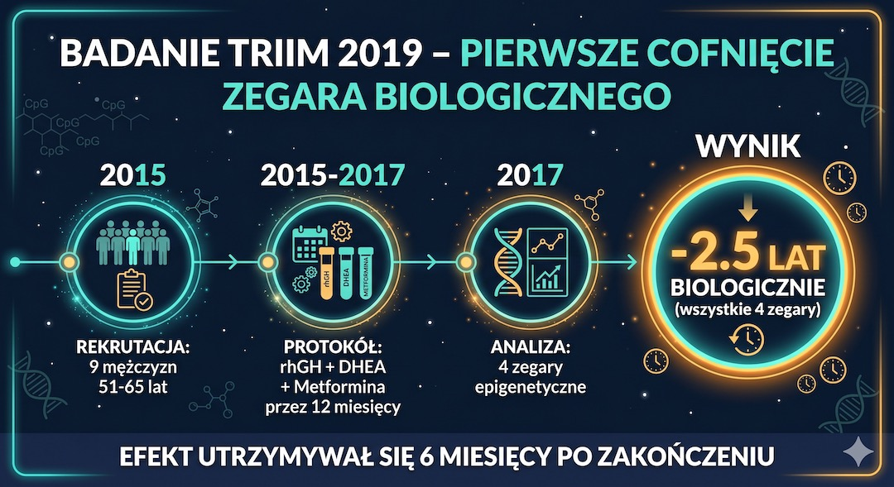

Wyobraź sobie, że możesz wziąć kroplę krwi i dowiedzieć się, ile lat mają Twoje komórki. Nie ile masz lat według metryki, nie jak wyglądasz w lustrze – ale ile lat ma Twoje DNA na poziomie chemicznym. Narzędzie, które to umożliwia, to Zegar Epigenetyczny Horvatha – jeden z największych przełomów w historii biologii starzenia. Po 50. roku życia ta informacja przestaje być tylko naukową ciekawostką. Staje się precyzyjną oceną ryzyka chorób i, co najważniejsze, miarą tego, jak skutecznie dbasz o swoje zdrowie. Najnowsza nauka udowadnia, że ten zegar można nie tylko zatrzymać, ale mierzalnie cofnąć – o lata, w ciągu zaledwie kilku tygodni.
Szybka odpowiedź
Po 50-tce nawet złożone tematy warto rozbierać na proste elementy, które da się zrozumieć i odnieść do własnego życia. W tym artykule znajdziesz najważniejsze fakty, kontekst i praktyczne wnioski, dzięki którym łatwiej oddzielisz ciekawostkę od informacji naprawdę użytecznej i przydatnej na co dzień.
Kluczowe wnioski
Kluczowe wnioski po 50-tce warto rozłożyć na praktyczne kroki i odnieść do codziennych decyzji.
- Zegar epigenetyczny mierzy wiek biologiczny na podstawie wzorców metylacji DNA, a nie wieku z metryki.
- Styl życia po 50. roku życia może przyspieszać albo spowalniać starzenie epigenetyczne.
- Nowsze zegary (GrimAge, DunedinPACE) lepiej prognozują ryzyko zdrowotne i tempo starzenia.
- Badania interwencyjne sugerują, że wiek biologiczny bywa częściowo odwracalny przy celowanych zmianach.
Czym jest metylacja DNA i dlaczego Twój PESEL nie mówi całej prawdy?
Metylacja DNA to proces epigenetyczny polegający na przyłączaniu grup metylowych (-CH3) do cytozyny w sekwencji DNA, co działa jak biologiczny wyłącznik dla poszczególnych genów. Wzorce tych "wyłączników" zmieniają się z wiekiem w sposób systematyczny i przewidywalny, co pozwala naukowcom precyzyjnie określić wiek biologiczny Twoich komórek.
Po 50-tce zrozumienie metylacji jest kluczowe, ponieważ pozwala ocenić realne tempo starzenia organizmu niezależnie od daty urodzenia. Jeśli chcesz zacząć od fundamentów, zobacz też sekcję Zdrowie .
Epigenetyka to warstwa informacyjna nad sekwencją DNA, która decyduje o tym, które geny są aktywne (czytane), a które wyciszone. Wraz z upływem czasu nasz genom ulega procesowi "dryfowania epigenetycznego": geny, które powinny nas chronić (np. naprawiające DNA), zostają wyciszone, a te promujące stany zapalne – aktywowane. Zegar epigenetyczny mierzy ten dryf, dając nam wgląd w to, jak nasze środowisko, dieta i styl życia zapisały się w naszych komórkach przez ostatnie dekady.
Wniosek praktyczny: Traktuj metylację DNA jako księgę rachunkową swojego zdrowia – to, co jesz, jak śpisz i jak się ruszasz, dosłownie zapisuje się w Twoim genomie, decydując o Twojej biologicznej młodości.
Steve Horvath i jego zegar: algorytm, który widzi prawdziwy wiek komórek?
Zegar epigenetyczny Horvatha, opracowany w 2013 roku na UCLA, to algorytm mierzący poziom metylacji w 353 specyficznych miejscach genomu (tzw. miejscach CpG). Pozwala on na określenie wieku biologicznego niemal każdej tkanki człowieka z dokładnością do 3,6 roku, co czyni go najbardziej precyzyjnym biomarkerem starzenia w historii medycyny.
Dla osób po 50. roku życia zegar ten jest bezcennym narzędziem do monitorowania, jak szybko starzeje się ich ciało na poziomie komórkowym. Kontekst markerów znajdziesz w artykule Markery krwi .
Steve Horvath przeanalizował dane z 8000 próbek z 51 różnych typów tkanek, aby znaleźć wspólny mianownik starzenia. Odkrył, że ten sam zestaw 353 miejsc w DNA reaguje na upływ czasu identycznie w sercu, wątrobie, skórze czy mózgu. To odkrycie zmieniło paradygmat: starzenie przestało być abstrakcyjnym pojęciem, a stało się mierzalnym parametrem biochemicznym, który można sprawdzić prostym badaniem krwi lub śliny.
Wniosek praktyczny: Zegar Horvatha pozwala wykryć tzw. przyspieszenie epigenetyczne – jeśli Twój wiek biologiczny jest wyższy od PESEL-u, to sygnał, że Twoje ciało zużywa się szybciej niż powinno i wymaga interwencji.

Ewolucja zegarów: GrimAge i DunedinPACE jako predyktory długowieczności?
Nowoczesne zegary epigenetyczne drugiej i trzeciej generacji, takie jak GrimAge i DunedinPACE, przewidują ryzyko zgonu oraz tempo starzenia w czasie rzeczywistym. GrimAge jest uznawany za najsilniejszy predyktor śmiertelności sercowo-naczyniowej i nowotworowej, natomiast DunedinPACE mierzy, ile lat biologicznych starzejesz się na każdy rok kalendarzowy.
To właśnie te narzędzia są dziś preferowane w badaniach klinicznych nad spowalnianiem starzenia po 50-tce. W praktyce warto to łączyć z planem z artykułu Trening 3x30 dla 50+ .
W przeciwieństwie do pierwszych zegarów, GrimAge bierze pod uwagę stężenia białek w osoczu i historię palenia, co daje mu ogromną moc prognostyczną. Z kolei DunedinPACE to "prędkościomierz starzenia" – pokazuje, jak Twoje ciało radzi sobie "tu i teraz". Jeśli Twój wynik wynosi 0,8, to starzejesz się o 0,8 roku biologicznego na każdy rok chronologiczny. To najlepsza informacja zwrotna, jaką możesz dostać po wprowadzeniu nowej diety lub planu treningowego.
Wniosek praktyczny: Skup się na wskaźniku DunedinPACE – jeśli wynosi on poniżej 1,0, starzejesz się wolniej niż upływa czas, co jest najlepszym gwarantem zachowania sprawności w kolejnych dekadach.

Co przyspiesza Twój zegar biologiczny: fakty o paleniu, otyłości i stresie?
Starzenie epigenetyczne przyspieszają mierzalnie: palenie tytoniu, wysokie BMI (szczególnie otyłość brzuszna), przewlekły stres psychologiczny oraz brak regenerującego snu. Badania wykazują, że otyłość przyspiesza zegar biologiczny wątroby nawet o kilka lat, a chroniczny stres wpływa na metylację genów odpowiedzialnych za odporność i stany zapalne.
Zidentyfikowanie tych czynników u osób po 50-tce pozwala na wdrożenie zmian, które mogą mierzalnie zatrzymać proces starzenia DNA. Wsparciem może być także poradnik snu: Sen po 50 .
Zegar epigenetyczny jest wyjątkowo czuły na toksyny środowiskowe i niezdrowy styl życia. Palenie tytoniu zostawia specyficzny ślad w metylacji, który zegar GrimAge potrafi odczytać z ogromną dokładnością. Z drugiej strony, stulatkowie (centenary) mają epigenetycznie młodsze komórki niż wskazuje ich metryka – co udowadnia, że długowieczność ma swój biologiczny podpis w DNA, który częściowo zależy od naszych codziennych wyborów.
Wniosek praktyczny: Starzenie epigenetyczne nie jest wyrokiem – to proces dynamiczny i odwracalny. Wyeliminowanie jednego dużego negatywnego czynnika (np. poprawa snu) może mierzalnie "odmłodzić" Twoje DNA w kilka miesięcy.
Badanie TRIIM: jak medycyna po raz pierwszy cofnęła zegar biologiczny?
Badanie TRIIM z 2019 roku było pierwszym dowodem klinicznym na to, że zegar epigenetyczny Horvatha można cofnąć o średnio 2,5 roku w ciągu zaledwie 12 miesięcy. Uczestnicy stosowali protokół obejmujący hormon wzrostu, DHEA oraz metforminę, co doprowadziło do regeneracji grasicy (kluczowego narządu odpornościowego) i poprawy profilu metylacji DNA. Chociaż badanie było pilotażowe, otworzyło drogę do nowej ery medycyny, w której starzenie jest procesem zarządzalnym.
Co najważniejsze, cofnięcie wieku biologicznego w badaniu TRIIM nie było tylko "statystycznym błędem". Steve Horvath przeanalizował próbki czterema różnymi zegarami i wszystkie potwierdziły ten sam wynik. Co więcej, efekt utrzymywał się przez pół roku po zakończeniu leczenia. To dowód, że nawet u osób w wieku 50-65 lat organizm posiada ogromne rezerwy regeneracyjne, które można aktywować przy odpowiedniej interwencji medycznej.
Wniosek praktyczny: Choć protokół TRIIM jest eksperymentalny, dowodzi on ponad wszelką wątpliwość, że starzenie jest procesem plastycznym, a nie sztywną ścieżką w dół.

Protokół Fitzgerald: dieta i styl życia cofają wiek o 3 lata w 8 tygodni?
Badanie dr Kary Fitzgerald z 2021 roku udowodniło, że specyficzna dieta bogata w donory grup metylowych (zielone warzywa, jagody, buraki, kurkuma) oraz optymalizacja snu i ruchu mogą cofnąć zegar Horvatha o ponad 3 lata w zaledwie 8 tygodni.
To pierwsze randomizowane badanie kontrolne (RCT) wykazujące, że zmiany behawioralne mają bezpośredni wpływ na wzorce metylacji DNA. Dla osób po 50-tce to najbezpieczniejszy i najbardziej dostępny sposób na odzyskanie biologicznej młodości bez użycia leków.
Protokół Fitzgerald skupia się na dostarczaniu organizmowi substratów niezbędnych do prawidłowej metylacji (kwas foliowy, betaina, witamina B12) oraz polifenoli, które działają jak regulatorzy enzymów epigenetycznych. Grupa interwencyjna nie tylko stała się biologicznie młodsza od grupy kontrolnej, ale też poprawiła parametry biochemiczne krwi. To dowód, że Twoje codzienne wybory przy stole i na spacerze mają większą moc niż jakiekolwiek drogie suplementy.
Wniosek praktyczny: Wprowadź do diety zielone warzywa liściaste i buraki oraz dbaj o 7-8 godzin snu – to najprostszy sposób, by Twoje DNA zaczęło wyglądać młodziej na poziomie chemicznym już w dwa miesiące.
Zobacz też: trening siłowy, dieta po 50-tce, sen i regeneracja oraz badania krwi.
Najczęściej zadawane pytania
Najczęściej zadawane pytania po 50-tce warto rozłożyć na praktyczne kroki i odnieść do codziennych decyzji.
Czy test zegara epigenetycznego jest dostępny komercyjnie?
Tak, testy mierzące wiek biologiczny na podstawie metylacji DNA są już dostępne dla każdego. Firmy takie jak TruDiagnostic czy Elysium oferują zestawy do poboru krwi lub śliny, które można zamówić do domu (również do Polski przez serwisy zagraniczne). Ceny wahają się od 250 do 500 USD. Ważne, aby wybierać testy korzystające z najnowszych algorytmów (DunedinPACE lub GrimAge), ponieważ dają one najbardziej użyteczne informacje kliniczne.
Warto przeczytać też: trening siłowy, dieta po 50-tce, sen i regeneracja, badania krwi.
Powiązane tematy: trening siłowy, dieta po 50-tce, sen i regeneracja, suplementacja.
Czy dieta śródziemnomorska spowalnia zegar epigenetyczny?
Tak, liczne badania potwierdzają, że dieta śródziemnomorska – bogata w polifenole, zdrowe tłuszcze i donory grup metylowych – jest silnie związana z wolniejszym starzeniem epigenetycznym. Składniki takie jak oliwa z oliwek, warzywa strączkowe, orzechy i owoce jagodowe wspierają prawidłowe wzorce metylacji DNA, co bezpośrednio przekłada się na niższy wiek biologiczny i mniejsze ryzyko chorób przewlekłych.
Dlaczego biologiczny wiek moich narządów może się różnić?
Zegary epigenetyczne potrafią mierzyć wiek poszczególnych tkanek niezależnie. Możesz mieć np. serce o wieku biologicznym 50 lat, ale wątrobę o wieku 60 lat (np. z powodu nadużywania alkoholu lub leków). Ta narządowa specyfika starzenia pokazuje, że różne części naszego ciała zużywają się w różnym tempie w zależności od naszych genów, ale przede wszystkim od tego, jak traktujemy dany narząd przez lata.
Czy wynik zegara epigenetycznego można realnie poprawić po 50. roku życia?
Tak, badania interwencyjne sugerują, że poprawa snu, regularny ruch, redukcja stresu i dieta o niskim stopniu przetworzenia mogą przesuwać wskaźniki epigenetyczne w korzystnym kierunku. Najlepiej oceniać trend po 8-12 tygodniach, a nie pojedynczy odczyt.
Źródła
Źródła po 50-tce warto wdrażać krok po kroku i od razu łączyć teorię z praktyką. Dzięki temu łatwiej utrzymać regularność, poprawić bezpieczeństwo działań i szybciej zauważyć trwałe efekty zdrowotne w codziennym życiu.
- Genome Biology (2013) — DNA methylation age of human tissues and cell types
- Aging (Albany NY) (2018) — DNA methylation GrimAge strongly predicts lifespan and healthspan
- eLife (2022) — DunedinPACE, a DNA methylation biomarker of the pace of aging
- Aging Cell (2021) — Potential reversal of epigenetic age using diet and lifestyle
- Aging Cell (2019) — TRIIM trial and reversal of epigenetic aging trend
- Nature Aging (2022) — Epigenetic clocks and predicting biological age
Uwaga: Artykuł ma charakter informacyjny i edukacyjny. Nie zastępuje konsultacji lekarskiej, diagnozy ani leczenia.